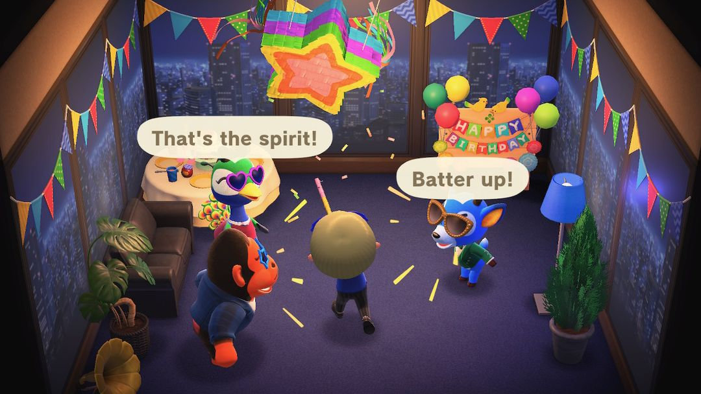
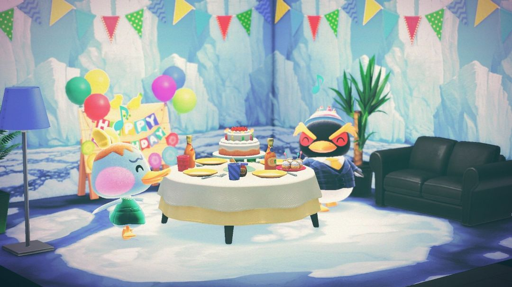
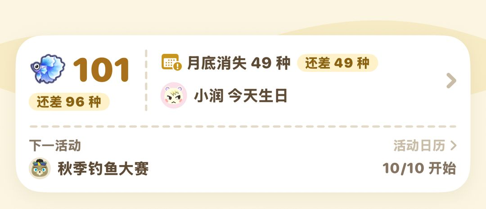

生日：你自己的生日和岛民生日
生日会怎么过、能拿到什么，岛民生日送什么最加分
岛上的生日分两种：一种是你自己的，一年一次，出门就有人张罗派对，K.K. 也会专程赶来唱歌；另一种是岛民的，寿星那天整天待在家里等你上门，送对了礼物交情涨得比平时快。
两种生日都会提前 8 天贴在布告栏上。自己的生日不用准备什么，记得当天上线、走出家门就行；岛民生日最好提前在 Nook商店备一件礼物和一张包装纸，当天带过去。下面先说你自己的生日，再说岛民的。
01你的生日：出门就有派对
生日是建角色时填的那天。填了 2 月 29 日的，平年就在 2 月 28 日过。
提前 8 天，服务处前的布告栏会贴出通知；到了当天早上，西施惠或狸克会在广播里再提一遍。
当天一走出家门，和你交情最好的岛民就会迎上来，把你拉去他家。屋里已经布置好了，中间摆着蛋糕，另外还有两位岛民等着。大家举着拉炮唱起岛歌，你吹灭蜡烛，拉炮一响，就能收到一件生日礼物。
接着他们会递给你一根棍子，让你去打挂着的彩罐。打得越快，掉出来的生日纸杯蛋糕越多，最后主人会把蛋糕全都塞给你。之后岛民们会一直在屋里跳舞唱歌，等你离开，派对才算散场。
派对结束后再出门，会收到妈妈寄来的信，信里夹着一个「妈妈手作蛋糕」。另外还会解锁一个 Nook 里数成就。

吹完蜡烛打彩罐，打得越快掉的纸杯蛋糕越多（英文版画面）（图：Nookipedia）
小提示派对由跟你交情最好的那位岛民来办。想知道自己跟谁最好，2.0 起巴猎岛上星薇的摊位开张以后，花 1,000 铃钱就能请她看看你和某位岛民的交情。
02生日纸杯蛋糕怎么用
彩罐里掉出来的生日纸杯蛋糕可以吃，吃了有力气搬树、敲石头；也能摆出来当装饰，但是卖不掉。
更划算的用法是拿去送岛民，别的岛的岛民也算。交情够好的岛民收下以后，会回送生日系列里的一件：
| 生日系列 | 类型 |
| 生日蛋糕、生日蜡烛、生日立牌、生日桌 | 家具 |
| 生日帽、生日眼镜 | 服饰 |
| 派对壁纸、派对地板 | 墙和地板 |
要是交情还不够，或者这套你已经拿齐了，岛民就只会回一件普通礼物。所以纸杯蛋糕最好留给跟你关系好、而且你还缺这套家具的时候送。
03K.K. 来唱生日歌
生日当天，K.K. 会来服务处前的广场，不管那天是星期几都会来。他唱的是《你的生日》，片尾滚动的字幕换成了岛民们的祝福。唱完以后，他会把这首歌的唱片送给你。
朋友当天来你岛上玩，可以给你写留言。K.K. 第一次唱这首歌时会把这些留言放给你看，之后留言还会以朋友的名义寄到你的信箱里。
要是生日刚好撞上钓鱼大赛或者捕虫大赛，K.K. 会改到第二天再来。
注意《你的生日》这张唱片拿到以后，没法再从 Nook购物 订，别顺手卖掉。
2.0 开张的咖啡「鸽巢」也会帮你过生日：生日当天去喝一杯，喝完老板会祝你生日快乐。
04岛民生日：去他家送礼
岛民的生日也是提前 8 天上布告栏，当天早上广播。寿星那天一整天都待在家里，屋里放着《你的生日》。去不去随你，不过去了送份礼物能涨交情，第二天还会收到他寄来的回礼。
送什么东西，涨的交情差得挺多：
| 送的东西 | 交情 | 包装后 |
| 虫、鱼、化石价值 2,000 铃钱以上；其他东西 500 铃钱以上 | +5 | +8 |
| 虫、鱼、化石 501～1,999；其他东西 126～499 | +4 | +6 |
| 海洋生物；更便宜的东西 | +3 | +4 |
| 空罐、长靴、轮胎、杂草这类垃圾 | −5 | — |
从表里能看出来，包装这一步很值：同一件东西包好再送，最高一档能从 +5 涨到 +8。最省事的做法是在 Nook商店买一件 500 铃钱以上的家具或衣服，包好再送。包装纸也在 Nook商店买，顺手一起带上。垃圾千万别拿去凑数，会倒扣 5 点。
两位岛民同一天生日的话，会挤在其中一家合办，两位都能送礼。朋友也可以来你岛上给寿星送礼物。

同一天生日的两位岛民会在一家合办，都戴着生日帽（图：Nookipedia）
05怎么知道谁哪天生日
游戏里只能靠布告栏，而且要到提前 8 天才贴出来，想早点给寿星挑礼物就有点赶。动森圈圈的岛民图鉴里写着每位岛民的生日，可以提前查；首页卡片会在你岛上岛民生日当天写出来，一打开就知道是谁在过生日。

动森圈圈首页：住在你岛上的岛民过生日，当天会写「××今天生日」
动森圈圈 · 小程序和 iOS App 都搜「动森圈圈」